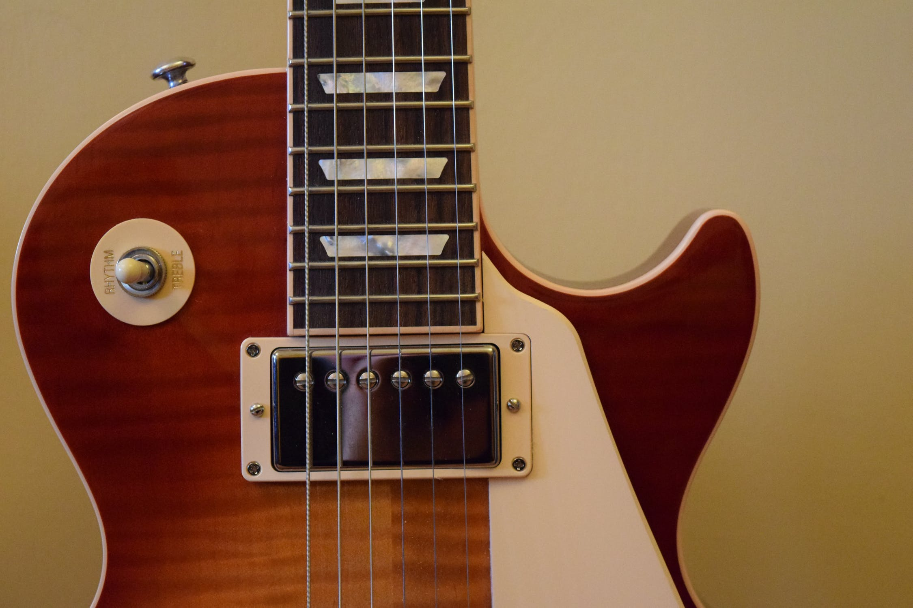

What is a guitar?
by Tommy Chicken Piano April 10 · 3 minThe guitar is a fretted musical instrument that usually has six strings. It is typically played with both hands by strumming or plucking the strings with either a guitar pick or the finger/fingernails of one hand, while simultaneously fretting with the fingers of the other hand. The sound of the vibrating strings is projected either acoustically, by means of the hollow chamber of the guitar, or through an electrical amplifier and a speaker.
The guitar is a type of chordophone, traditionally constructed from wood and strung with either gut, nylon or steel strings and distinguished from other chordophones by its construction and tuning. The modern guitar was preceded by the gittern, the vihuela, the four-course Renaissance guitar, and the five-course baroque guitar, all of which contributed to the development of the modern six-string instrument.
There are three main types of modern acoustic guitar: the classical guitar, the steel-string acoustic guitar, and the archtop guitar, which is sometimes called a "jazz guitar". The tone of an acoustic guitar is produced by the strings' vibration, amplified by the hollow body of the guitar, which acts as a resonating chamber. The classical guitar is often played as a solo instrument using a comprehensive finger-picking technique where each string is plucked individually by the player's fingers, as opposed to being strummed. The term "finger-picking" can also refer to a specific tradition of folk, blues, bluegrass, and country guitar playing in the United States. The acoustic bass guitar is a low-pitched instrument that is one octave below a regular guitar.
Electric guitars, introduced in the 1930s, use an amplifier and a loudspeaker that both makes the sound of the instrument loud enough for the performers and audience to hear, and, given that it produces an electric signal when played, that can electronically manipulate and shape the tone using an equalizer and a huge variety of electronic effects units, the most commonly used ones being distortion and reverb.